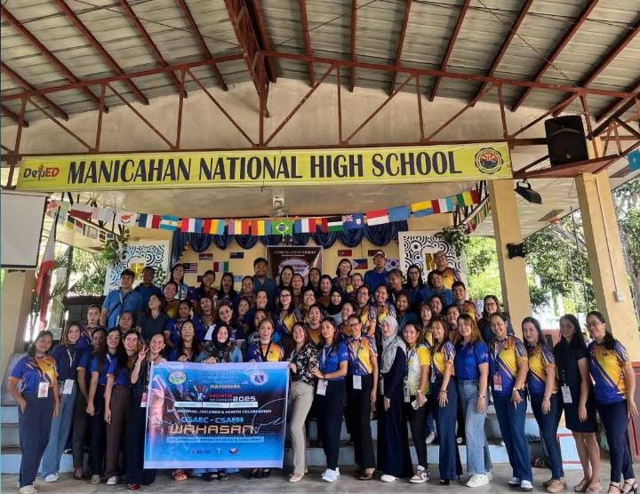
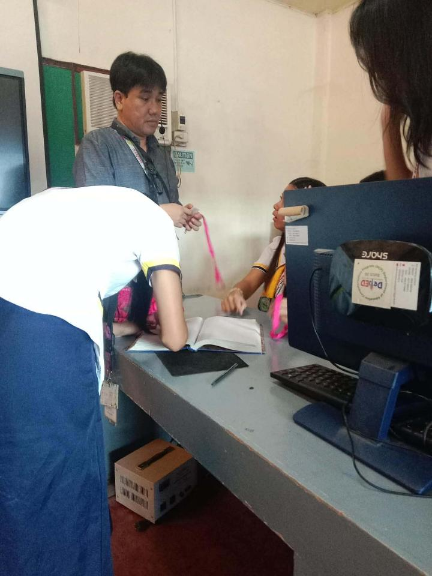
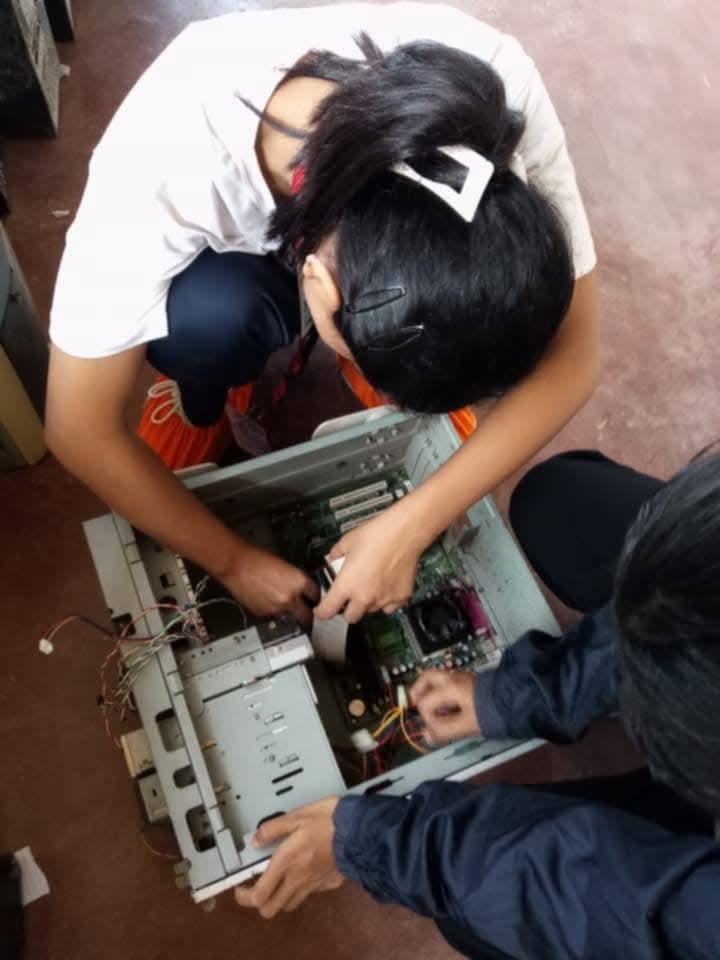
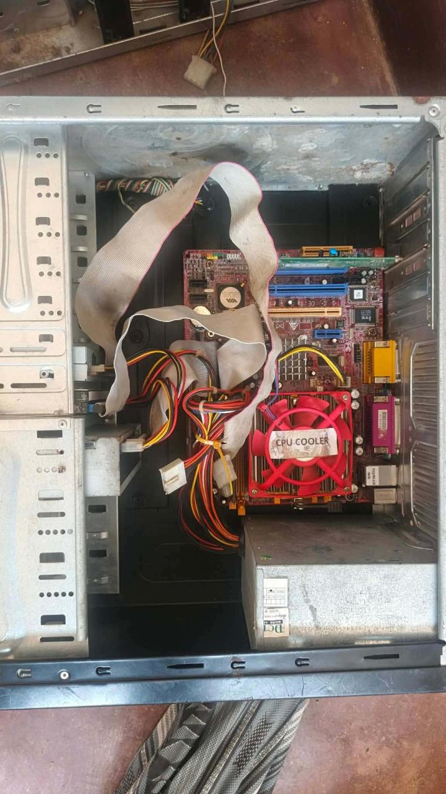
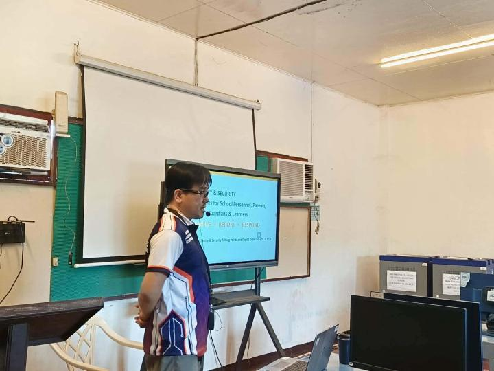

Computer Systems Servicing — CSS Department

The Computer Systems Servicing — CSS Department of Manicahan National High School is dedicated to providing holistic guidance and assistance to every learner. We ensure that students receive not just academic instruction, but also the care, counseling, and support needed to thrive in and outside the classroom.
To produce well-rounded, disciplined, and responsible individuals who contribute meaningfully to society — guided by values, excellence, and service.
To provide accessible, quality guidance and support services that empower students to realize their full potential — academically, socially, and personally.
Through guidance, hands-on learning, and technical training — we shape the future of every student.

We provide one-on-one assistance, enrollment help, and counseling services to ensure every student feels supported and heard.

Students gain practical skills in computer assembly, maintenance, and repair — building confidence and technical expertise.

Learning the inner workings of technology — from identifying parts to proper assembly and troubleshooting.

Regular training sessions, workshops, and information drives to keep students and staff informed and empowered.
Established: 1964 as Manicahan Extension High School — one of the pioneer extension high schools in Zamboanga City.
In 1972, it became the pilot barangay high school in Zamboanga City through the vision of Dr. Pedro Oreta.
Formally nationalized and renamed Manicahan National High School in 1999 under the Department of Education.
Location: 23 kilometers East of Zamboanga City — serving the Manicahan community and neighboring areas.